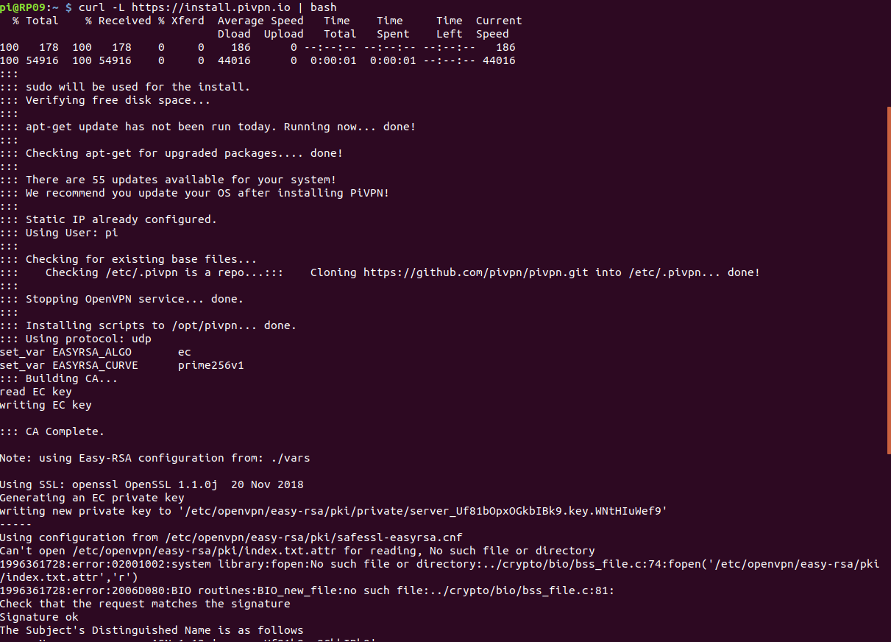
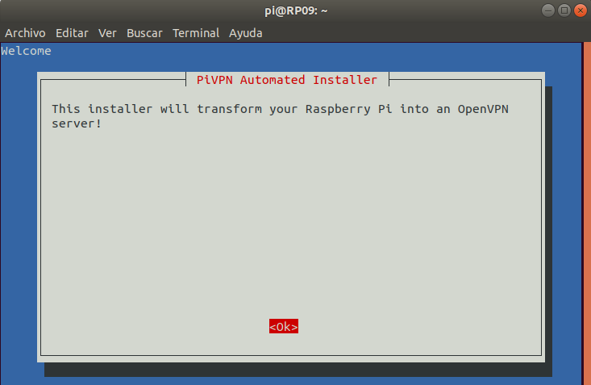
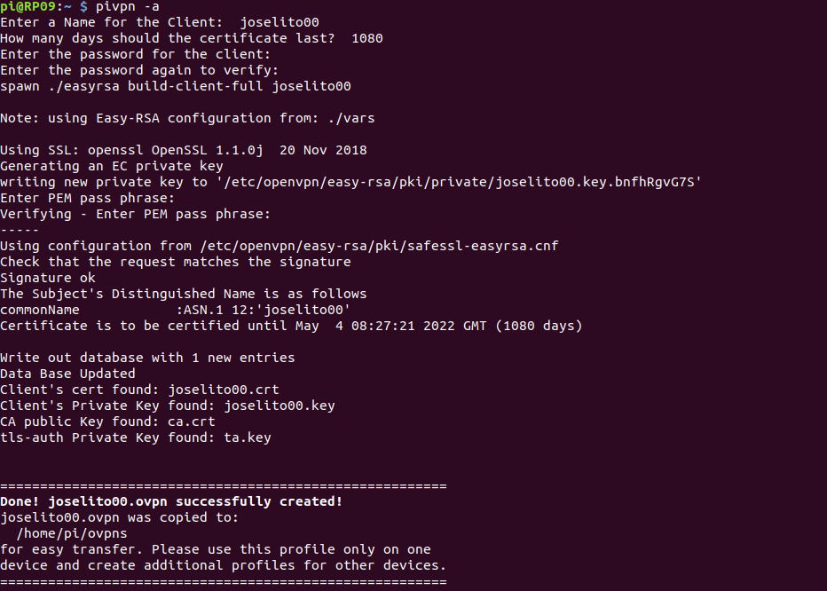

VPN
Instalación

Para instalar pongo el comando curl -l https://install.pivpn.io | bash y se hara una instalación y luego saldra unos pasos

como estos y les das a ok, luego saldra para que eligas entre tcp y udp y he puesto tcp, luego que eligas un usuario y eliges cualquiera yo en mi caso e elegido pi, luego en la ip que usa he puesto la publica, y los demas por defecto, luego en domain pones el dominio que quieras yo he puesto josecp.com

Luego para crear el usuario usamos pivpn -a le damos a enter y rellenamos lo que nos pida con los datos que queramos